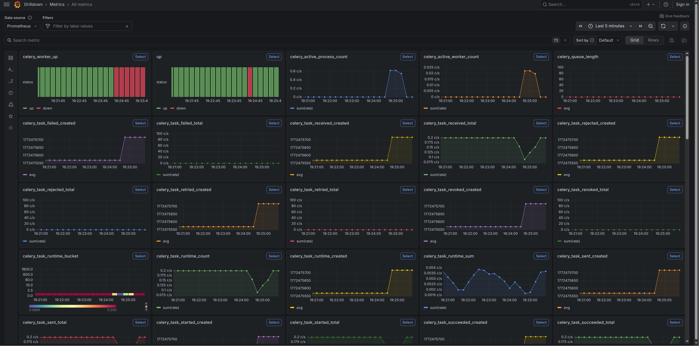
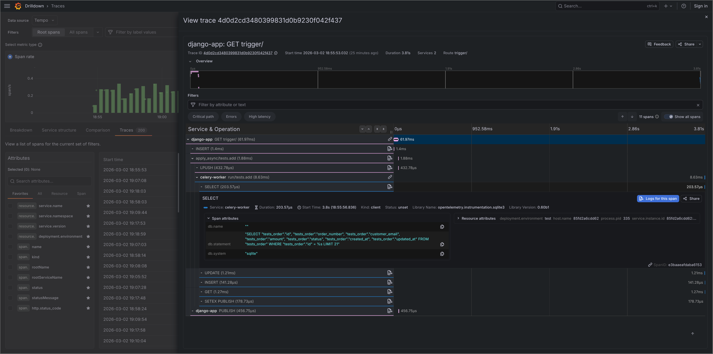
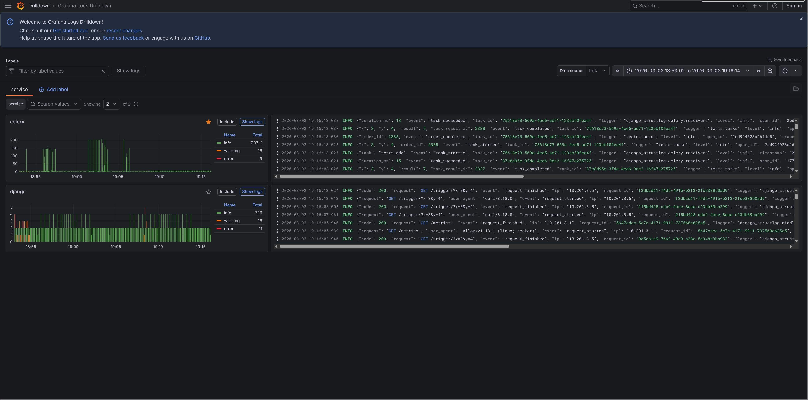
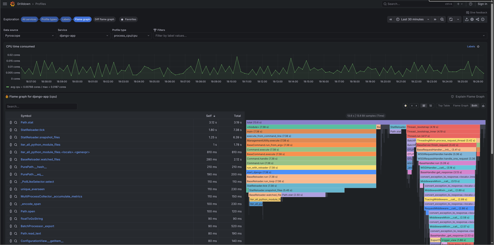
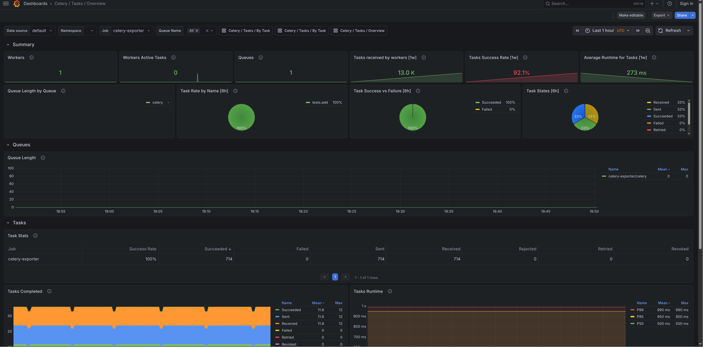
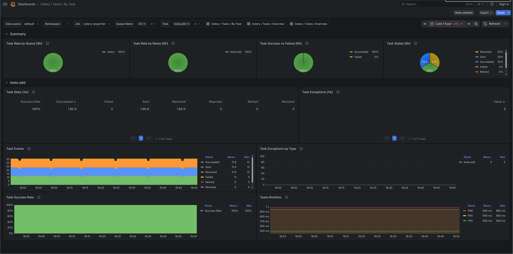
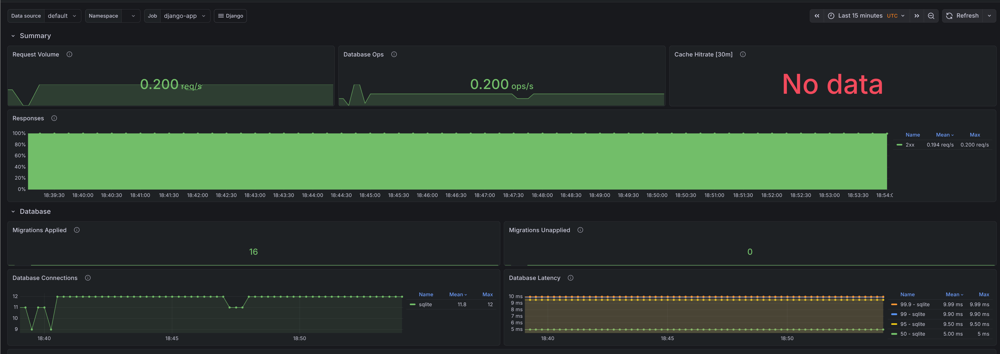
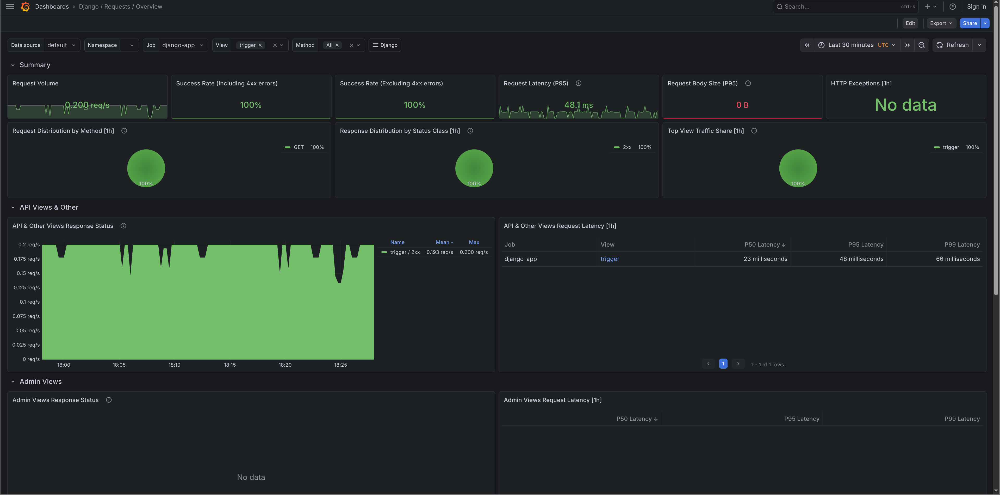
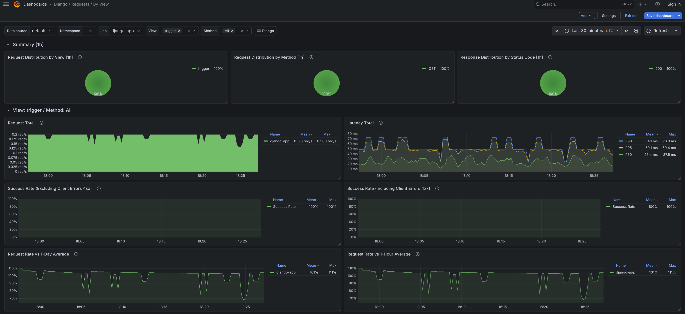
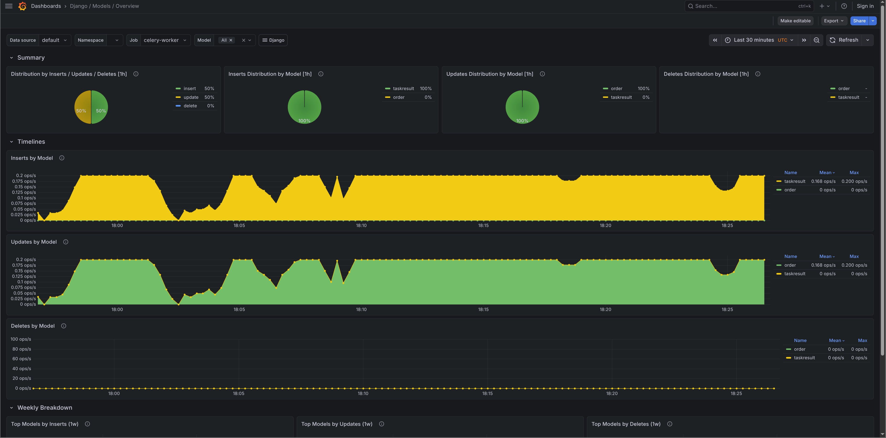

Demo stack¶
Screenshots from manage.py o11y stack start running against the test project, a minimal Django app that fires one Celery task every 5 seconds via a /trigger/ endpoint. Traffic is low so most panels are sparse, but everything is wired up.
Run it yourself with:
Grafana starts at http://localhost:3000 with all dashboards pre-loaded and no login required.
Metrics¶
Django request rates, latency percentiles, database query counts, cache hit rates, and migration status from django-prometheus. Dashboards imported from django-mixin.

Traces¶
Distributed traces from OpenTelemetry via Tempo. Each HTTP request and Celery task gets a span, with database queries and outbound HTTP calls as child spans.

Logs¶
Structured JSON logs from structlog ingested via Alloy into Loki. Every log line carries trace_id and span_id, so you can jump from a log entry directly to its trace.

Profiles¶
Continuous CPU profiling from Pyroscope. Flame graphs show where your app spends time. Profiles carry the same service.name and deployment.environment tags as your traces.

Imported dashboards¶
These dashboards are pulled from Grafana.com when you run o11y stack start. They come from django-mixin and celery-mixin. If a panel is wrong or a dashboard is missing something, open an issue in the relevant mixin repo rather than here.
Celery / Tasks / Overview¶
Task throughput, failure rates, and queue depth across all workers.
- Grafana.com: 17509

Celery / Tasks / By Task¶
Per-task execution time, success/failure counts, and retry rates.
- Grafana.com: 17508

Django / Overview¶
Request rate, error rate, p50/p95/p99 latency, and database query volume.
- Grafana.com: 17617

Django / Requests / Overview¶
Request metrics broken down by status code and method.
- Grafana.com: 17616

Django / Requests / By View¶
Per-view latency and error rates. Good for finding which endpoints are slow or failing.
- Grafana.com: 17613

Django / Models / Overview¶
Insert, update, and delete counts per model. Shows which models background tasks are writing to most.
- Grafana.com: 24933
